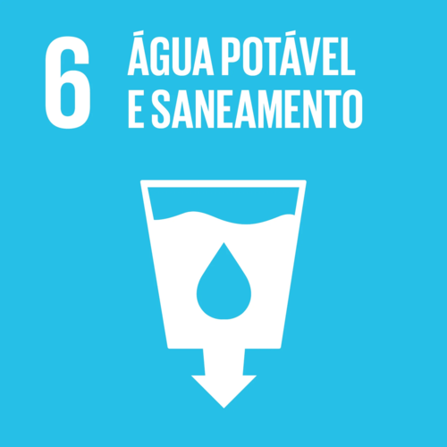
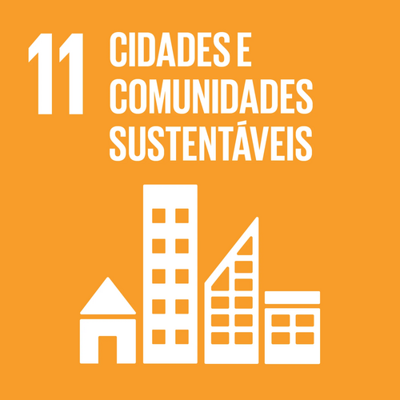

ODS

O lixo contamina rios e lençóis freáticos, tornando a água imprópria para o consumo humano.
Lixo nas ruas entope bueiros, causando enchentes que destroem cidades e espalham doenças.

Animais marinhos confundem plásticos com comida, morrendo por asfixia ou intoxicação.
O chorume dos lixões envenena o solo, mata a vegetação e atrai animais transmissores de doenças.